Medidas de tamanho para pinguins forrageadores adultos perto da Estação Palmer, Antártida. Inclui medidas para espécies de pinguins, ilha no Arquipélago Palmer, tamanho (comprimento da nadadeira, massa corporal, dimensões do bico) e sexo.
Formato: um banco de dados com 344 observações e 8 variáveis
species: espécies de pinguins (Adélie, Chinstrap e Gentoo)
island: ilha no arquipélago de Palmer, Antártida (Biscoe, Dream ou Torgersen)
bill_length_mm: comprimento do bico em milímetros
flipper_length_mm: comprimento da nadadeira em milímetros
body_mass_g: massa corporal em gramas
sex: sexo do pinguin (macho ou fêmea)
year: ano em que foi realizado o estudo
Uma olhada em penguins
species
island
bill_length_mm
bill_depth_mm
flipper_length_mm
body_mass_g
sex
year
Gentoo
Biscoe
50.2
14.3
218
5700
male
2007
Adelie
Biscoe
37.6
17.0
185
3600
female
2008
Adelie
Dream
41.1
19.0
182
3425
male
2007
Gentoo
Biscoe
44.9
13.3
213
5100
female
2008
Gentoo
Biscoe
50.5
15.9
222
5550
male
2008
Adelie
Torgersen
36.7
19.3
193
3450
female
2007
Gentoo
Biscoe
47.2
15.5
215
4975
female
2009
Adelie
Biscoe
38.2
18.1
185
3950
male
2007
Chinstrap
Dream
50.2
18.8
202
3800
male
2009
Adelie
Torgersen
40.9
16.8
191
3700
female
2008
Tabela 1: Uma amostra aleatória de dez casos do banco de dados penguins
TitanicSurvival
Informações sobre o status de sobrevivência, sexo, idade e classe de passageiros de 1309 passageiros no desastre do Titanic em 1912.
Formato: um banco de dados com 1309 observações e 4 variáveis
survived (sobreviveu): no or yes (não ou sim)
sex (sexo): female or male (masculino ou feminino)
age: idade em anos (frações quando crianças)
passengerClass: classe do passageiro (1st, 2nd, or 3rd class - primeira, segunda ou terceira classe)
Uma olhada em TitanicSurvival
survived
sex
age
passengerClass
no
male
25.0
3rd
no
male
20.0
3rd
yes
male
0.4
3rd
yes
female
22.0
3rd
no
male
16.0
3rd
yes
male
56.0
1st
yes
female
35.0
1st
no
male
NA
3rd
no
male
21.0
3rd
yes
female
60.0
1st
Tabela 2: Uma amostra aleatória de dez casos do banco de dados TitanicSurvival
Tabelas, Tabelas de contingência e gráficos de barras
Tabela para uma variável
Espécies
n
%
Adelie
152
44.19%
Gentoo
124
36.05%
Chinstrap
68
19.77%
Total
344
100.00%
Tabela 3: Contagens e proporções das espécies de pinguins
Gráficos de barras
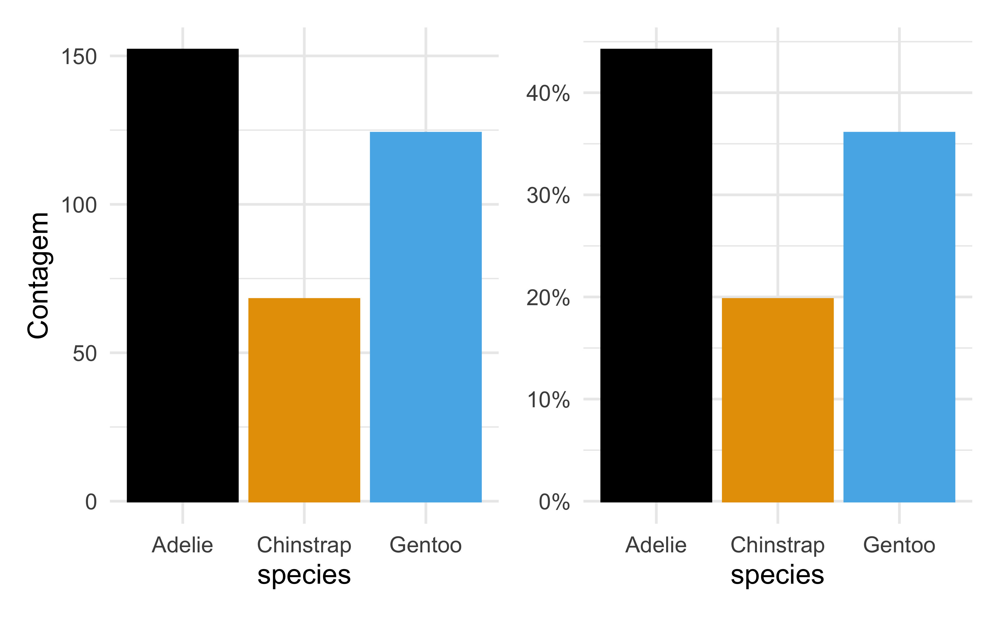
Tabelas de contingência
Resume dados para duas variáveis categóricas
Ilha
Espécie
Total
Adelie
Gentoo
Chinstrap
Biscoe
44
124
0
168
Dream
56
0
68
124
Torgersen
52
0
0
52
Total
152
124
68
344
Tabela 4: Contagens das espécies de pinguins por ilha
Gráficos de barras com duas variáveis
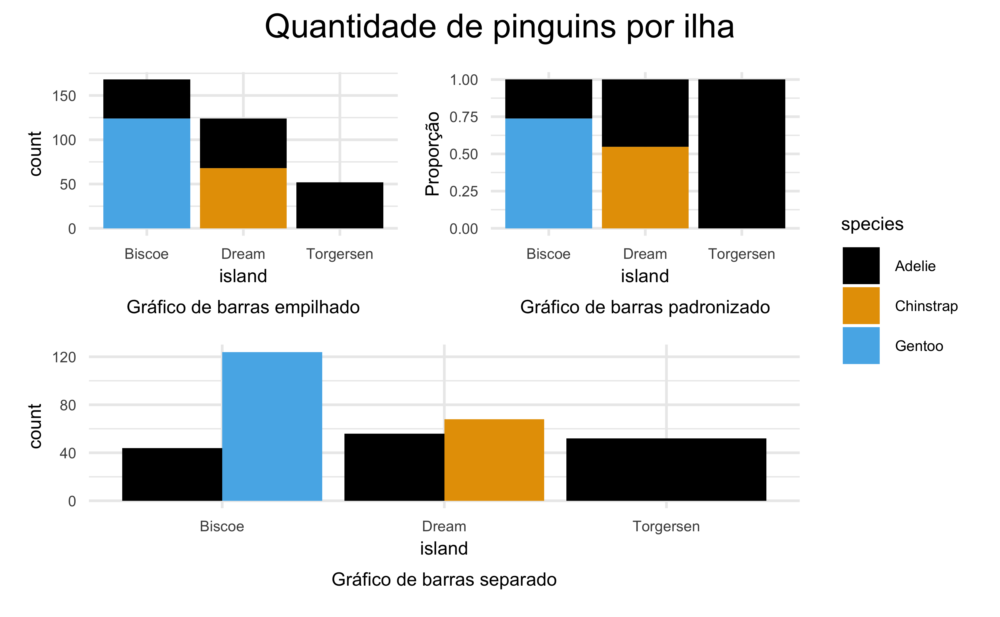
Gráfico de Barras Empilhado
Descrição: as barras para cada categoria do eixo x (neste caso, island) são empilhadas umas sobre as outras para mostrar a distribuição das subcategorias (neste caso, species) dentro de cada categoria. Esse tipo de gráfico é útil quando é razoável atribuir uma variável como explicativa e a outra como resposta.
Uso: é útil para visualizar a composição de cada categoria e comparar as somas totais de cada grupo, agrupando primeiro por uma variável e depois subdividindo pela outra.
Interpretação: você pode ver não apenas a contagem total para cada categoria do eixo x, mas também como essa contagem é dividida entre as diferentes subcategorias.
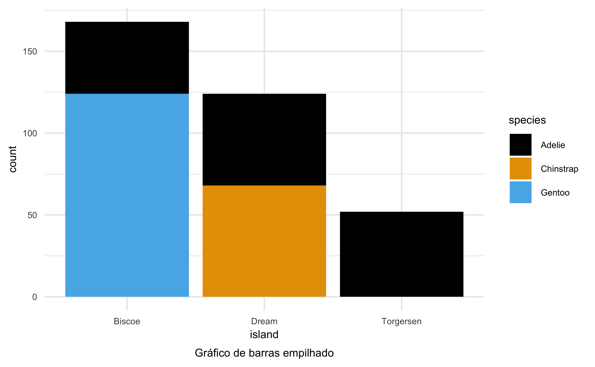
Gráfico de Barras Padronizado
Descrição: cada barra é padronizada para ter a mesma altura (1 ou 100%) e mostra a proporção de cada subcategoria dentro da categoria principal. Esse tipo de gráfico é útil quando a variável primária no gráfico de barras empilhado está relativamente desequilibrada.
Uso: ideal para comparar as proporções relativas de subcategorias entre diferentes categorias principais, independentemente do tamanho total de cada categoria. No entanto, perdemos a noção do número total de casos que cada barra representa.
Interpretação: foco na proporção que cada subcategoria representa em relação ao total da categoria principal, eliminando a variação absoluta nas contagens.
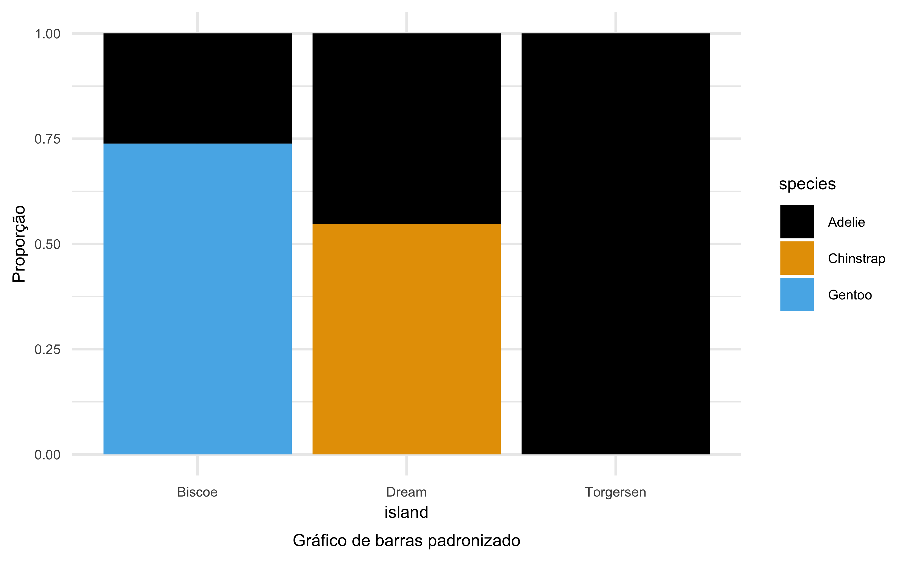
Gráfico de Barras Separado
Descrição: as barras de cada subcategoria são colocadas lado a lado (ou “dodge”) para cada categoria principal no eixo x. Esse tipo de gráfico é mais neutro na apresentação, sem priorizar uma variável como explicativa e outra como resposta.
Uso: útil para comparar diretamente as contagens (ou proporções) de cada subcategoria dentro das categorias principais. Entretanto, exige mais espaço horizontal, e pode ser difícil discernir associações entre variáveis quando os tamanhos dos grupos são muito diferentes.
Interpretação: permite uma comparação clara das contagens de subcategorias entre as diferentes categorias principais.
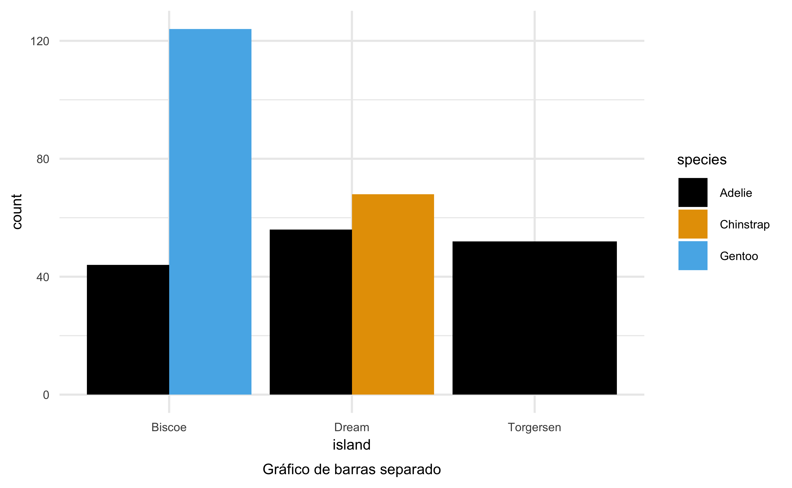
Gráficos de barras e associação entre variáveis
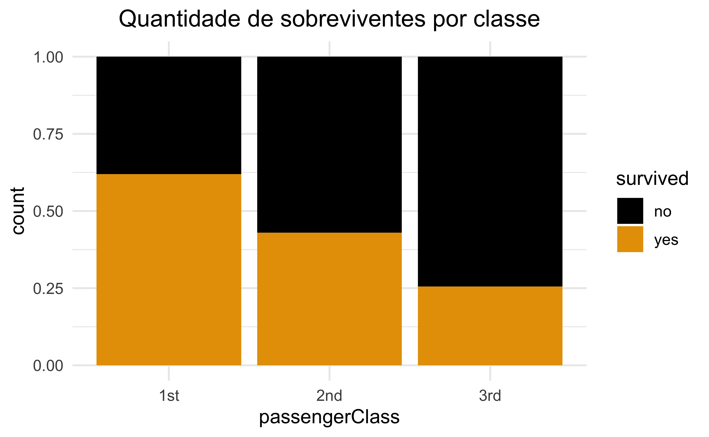
Proporções das linhas e das colunas
Proporções das linhas
Contagem das células divididas pelo total das linhas
Classe do passageiro
Sobrevivência
Total
%
Não
%
Sim
%
1st
123
38.1%
200
61.9%
323
100.0%
2nd
158
57.0%
119
43.0%
277
100.0%
3rd
528
74.5%
181
25.5%
709
100.0%
Tabela 5: Contagens e proporções de passageiros por classe: percentuais nas linhas
Proporções das colunas
Contagem das células divididas pelo total das colunas
Classe do passageiro
Sobrevivência
Não
%
Sim
%
1st
123
15.2%
200
40.0%
2nd
158
19.5%
119
23.8%
3rd
528
65.3%
181
36.2%
Total
809
100.0%
500
100.0%
Tabela 6: Contagens e proporções de passageiros por classe: percentuais nas colunas
Comparação de dados numéricos entre grupos: gráficos e tabelas
Histogramas
A cor pode ser usada para dividir histogramas para variáveis numéricas pelos níveis de uma variável categórica.
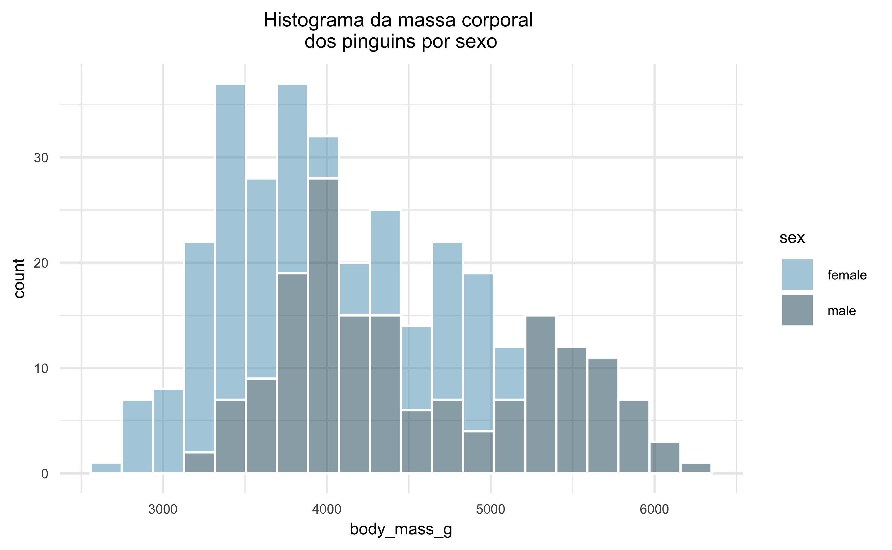
Diagrama de caixas
O gráfico de caixa lado a lado é outra ferramenta tradicional para comparação entre grupos.
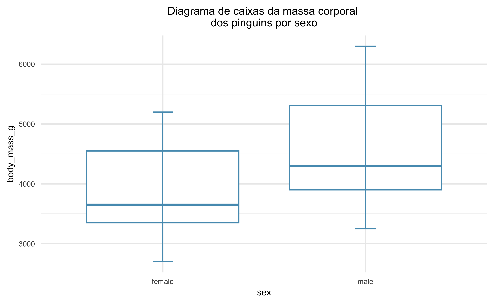
Use os gráficos para comprar massa corporal dos pinguins pelos dois grupos. O que você nota sobre o centro aproximado de cada grupo? O que você nota sobre a variabilidade entre os grupos? A forma é relativamente consistente entre os grupos? Quantas modas proeminentes existem para cada grupo?
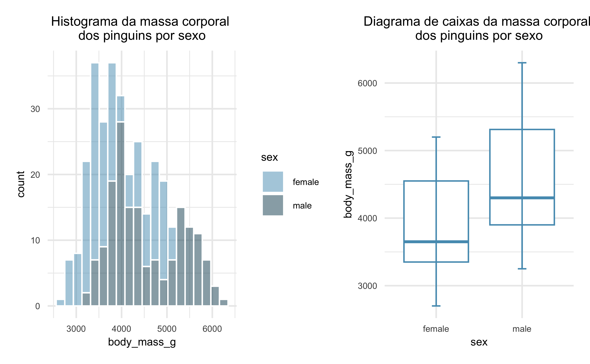
Como você avalia a relação entre o comprimento e profundidade da nadadeira dos pinguins?
Como você avalia agora que a relação entre as dimesões pode ser vizualizada por espécie?
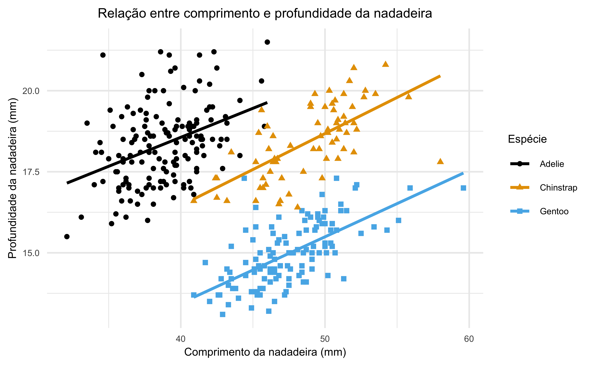
Gráfico de densidade sobreposto
Porque há dois picos tanto para pinguins machos como fêmeas?
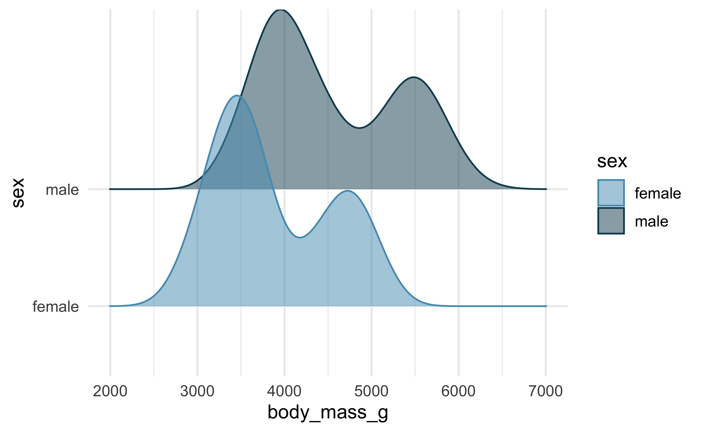
Gráfico de densidade sobreposto
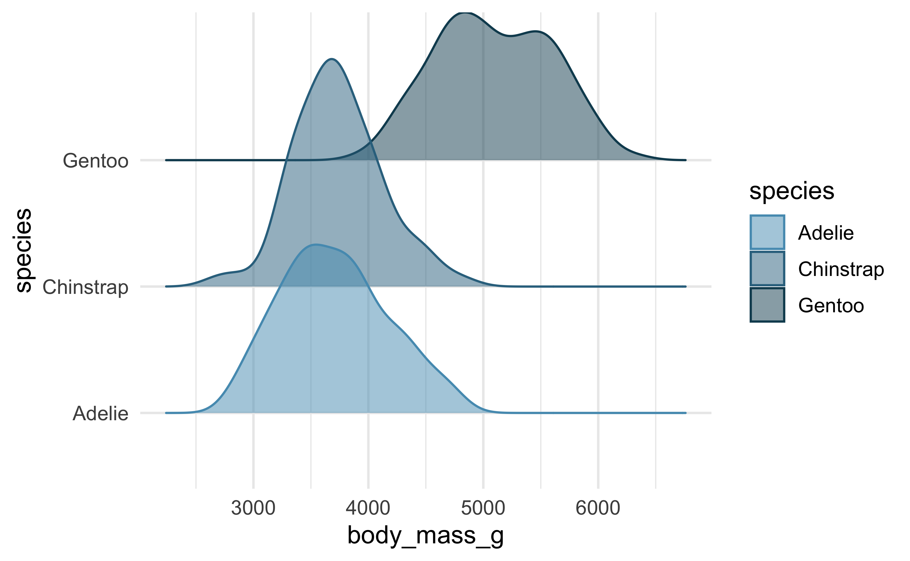
Facetamento
A exibição gráfica dos dados com base em grupos é dividida (facetada) em janelas diferentes
A mesma escala nos eixos x e y é preservada para facilitar a comparação
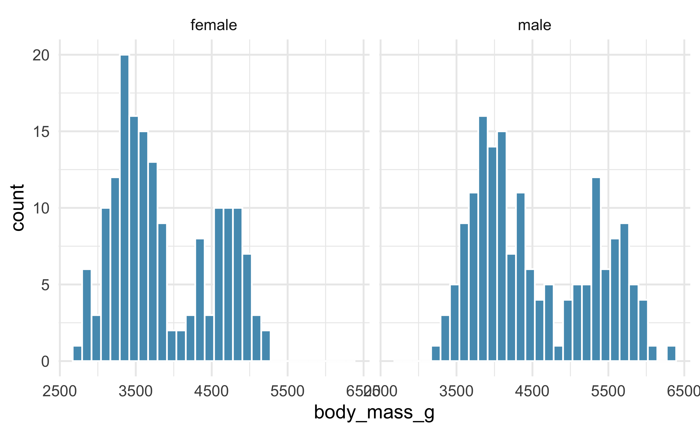
Facetamento
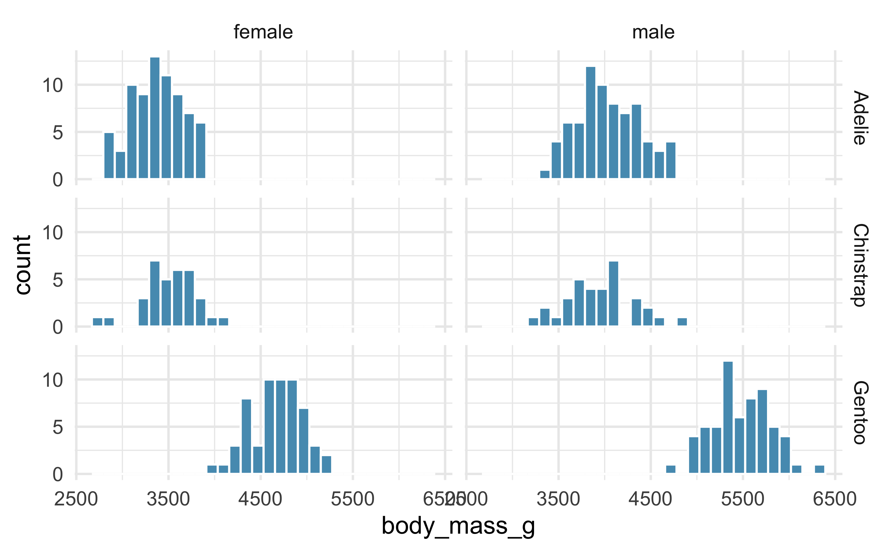
Tabelas
sex
n
Omisso
M
DP
MD
MIN
MAX
IQR
male
168
0
4545.7
787.6
4300
3250
6300
1412.5
female
165
0
3862.3
666.2
3650
2700
5200
1200.0
Tabela 7: Estatísticas descritivas para a massa corporal dos pinguins por sexo
Tabelas
species
n
Omisso
M
DP
MD
MIN
MAX
IQR
Adelie
152
1
3700.7
458.6
3700
2850
4775
650.0
Gentoo
124
1
5076.0
504.1
5000
3950
6300
800.0
Chinstrap
68
0
3733.1
384.3
3700
2700
4800
462.5
Tabela 8: Estatísticas descritivas para a massa corporal dos pinguins por espécie
Código fonte
---title: "Exploração de dados categóricos"format: revealjs: logo: img/brasao1_horizontal_cor_300dpi.png theme: simple css: logo.cssprogress: trueslide-number: trueeditor: visualeditor_options: chunk_output_type: console---```{r}#| include: falsesource("./_common.R")``````{r}#| label: setuplibrary(tidyverse)library(janitor)library(UsingR)library(carData)library(palmerpenguins)library(gt)library(scales)library(ggthemes)library(patchwork)library(DT)library(openintro)library(ggridges)conflicted::conflicts_prefer(dplyr::filter())conflicted::conflicts_prefer(dplyr::select())conflicted::conflicts_prefer(dplyr::lag())conflicted::conflicts_prefer(dplyr::summarize)conflicted::conflicts_prefer(dplyr::summarise)conflicted::conflicts_prefer(scales::alpha)conflicted::conflicts_prefer(scales::rescale)``````{r}#| label: dataTitanicSurvival <- TitanicSurvival |>tibble()```## O que vamos aprender?- Explorar dados categóricos usando: - Tabelas e gráficos# Bancos de dados utilizados## {background-image="img/pinguins.png" background-size="contain"}## [`penguins`](https://allisonhorst.github.io/palmerpenguins/) {.smaller}Medidas de tamanho para pinguins forrageadores adultos perto da Estação Palmer, Antártida. Inclui medidas para espécies de pinguins, ilha no Arquipélago Palmer, tamanho (comprimento da nadadeira, massa corporal, dimensões do bico) e sexo.- Formato: um banco de dados com `r nrow(penguins)` observações e `r ncol(penguins)` variáveis - `species`: espécies de pinguins (Adélie, Chinstrap e Gentoo) - `island`: ilha no arquipélago de Palmer, Antártida (Biscoe, Dream ou Torgersen) - `bill_length_mm`: comprimento do bico em milímetros - `flipper_length_mm`: comprimento da nadadeira em milímetros - `body_mass_g`: massa corporal em gramas - `sex`: sexo do pinguin (macho ou fêmea) - `year`: ano em que foi realizado o estudo## Uma olhada em `penguins````{r}#| label: tbl-penguins#| tbl-cap: Uma amostra aleatória de dez casos do banco de dados `penguins`#| tbl-cap-location: bottompenguins |>slice_sample(n =10) |>gt() |>cols_align(align ="center" ) |>tab_options(table.width =pct(100),table.font.size ="22px" ) |>opt_stylize(style =1, color ="gray" )```## {background-image="img/titanic.png" background-size="contain"}## `TitanicSurvival` {.smaller}Informações sobre o status de sobrevivência, sexo, idade e classe de passageiros de `r nrow(TitanicSurvival)` passageiros no desastre do Titanic em 1912.- Formato: um banco de dados com `r nrow(TitanicSurvival)` observações e `r ncol(TitanicSurvival)` variáveis - `survived` (sobreviveu): no or yes (não ou sim) - `sex` (sexo): female or male (masculino ou feminino) - `age`: idade em anos (frações quando crianças) - `passengerClass`: classe do passageiro (1st, 2nd, or 3rd class - primeira, segunda ou terceira classe)## Uma olhada em `TitanicSurvival````{r}#| label: tbl-titanic#| tbl-cap: Uma amostra aleatória de dez casos do banco de dados `TitanicSurvival`#| tbl-cap-location: bottomTitanicSurvival |>slice_sample(n =10) |>gt() |>cols_align(align ="center" ) |>fmt_number(decimals =1 ) |>tab_options(table.width =pct(100),table.font.size ="22px" ) |>opt_stylize(style =1, color ="gray" )```# Tabelas, Tabelas de contingência e gráficos de barras## Tabela para uma variável```{r}#| label: tbl-especies-pinguins#| tbl-cap: Contagens e proporções das espécies de pinguins#| tbl-cap-location: bottompenguins |>count(species, sort = T) |>mutate(prop = n/sum(n), ) |>rename( Espécies = species,"%"= prop ) |>adorn_totals("row") |>gt() |>fmt_percent(columns ="%" ) |>cols_align(align ="center" ) |>tab_style_body(style =cell_text(align ="left"),values =c("Adelie", "Gentoo", "Chinstrap") ) |>tab_style_body(style =cell_text(align ="center"),values ="Total" ) |>tab_style(style =cell_text(align ="center"),locations =cells_column_labels(columns ="Espécies") ) |>tab_options(table.width =pct(100),table.font.size ="26px" ) |>opt_stylize(style =1, color ="gray" )```## Gráficos de barras```{r}#| out-width: 70%bar_species_count <- penguins |>ggplot(aes(species, color = species,fill = species)) +geom_bar() +labs(y ="Contagem" ) +scale_color_colorblind() +scale_fill_colorblind() +theme(legend.position ="none" )bar_species_prop <- penguins |>ggplot(aes(species, y =after_stat(count/sum(count)),color = species,fill = species) ) +geom_bar() +labs(y =NULL ) +scale_y_continuous(labels =percent_format() ) +scale_color_colorblind() +scale_fill_colorblind() +theme(legend.position ="none" )bar_species_count + bar_species_prop```## Tabelas de contingênciaResume dados para duas variáveis categóricas```{r}#| label: tbl-pinguins-por-ilha#| tbl-cap: Contagens das espécies de pinguins por ilha#| tbl-cap-location: bottompenguins |>rename(Ilha = island ) |>count(Ilha, species) |>pivot_wider(id_cols = Ilha, names_from = species, values_from = n, values_fill =0) |>adorn_totals(where =c("row", "col")) |>gt() |>tab_spanner(label ="Espécie",columns =c(Adelie, Gentoo, Chinstrap) ) |>tab_style_body(style =cell_text(align ="left"),values =c("Biscoe", "Dream", "Torgersen") ) |>tab_style(style =cell_text(align ="center"),locations =cells_column_labels(columns ="Ilha") ) |>tab_style_body(style =cell_text(align ="center"),values ="Total" ) |>tab_options(table.width =pct(100),table.font.size ="26px" ) |>opt_stylize(style =1, color ="gray" ) |>cols_align(align ="center" )```## Gráficos de barras com duas variáveis```{r}#| out-width: 70%empilhado <- penguins |>ggplot(aes(island, fill = species)) +geom_bar() +labs(caption ="Gráfico de barras empilhado" ) +scale_fill_colorblind() +theme(text =element_text(size =8),plot.caption =element_text(hjust =0.5, size =8) )padronizado <- penguins |>ggplot(aes(island, fill = species)) +geom_bar(position ="fill") +labs(y ="Proporção",caption ="Gráfico de barras padronizado" ) +scale_fill_colorblind() +theme(text =element_text(size =8),plot.caption =element_text(hjust =0.5, size =8) )separado <- penguins |>ggplot(aes(island, fill = species)) +geom_bar(position ="dodge") +labs(caption ="Gráfico de barras separado" ) +scale_fill_colorblind() +theme(text =element_text(size =8),plot.caption =element_text(hjust =0.5, size =8) )(empilhado + padronizado)/separado +plot_layout(guides ="collect" ) +plot_annotation(title ="Quantidade de pinguins por ilha",theme =theme(plot.title =element_text(hjust =0.5)) ) ```## [Gráfico de Barras Empilhado]{style="font-size: 75%"} {.smaller}::: {style="font-size: 75%; line-height: 1"}- Descrição: as barras para cada categoria do eixo x (neste caso, island) são empilhadas umas sobre as outras para mostrar a distribuição das subcategorias (neste caso, species) dentro de cada categoria. Esse tipo de gráfico é útil quando é razoável atribuir uma variável como explicativa e a outra como resposta.- Uso: é útil para visualizar a composição de cada categoria e comparar as somas totais de cada grupo, agrupando primeiro por uma variável e depois subdividindo pela outra.- Interpretação: você pode ver não apenas a contagem total para cada categoria do eixo x, mas também como essa contagem é dividida entre as diferentes subcategorias.:::```{r}#| out-width: 70%empilhado```## [Gráfico de Barras Padronizado]{style="font-size: 70%"} {.smaller}::: {style="font-size: 75%; line-height: 1"}- Descrição: cada barra é padronizada para ter a mesma altura (1 ou 100%) e mostra a proporção de cada subcategoria dentro da categoria principal. Esse tipo de gráfico é útil quando a variável primária no gráfico de barras empilhado está relativamente desequilibrada.- Uso: ideal para comparar as proporções relativas de subcategorias entre diferentes categorias principais, independentemente do tamanho total de cada categoria. No entanto, perdemos a noção do número total de casos que cada barra representa.- Interpretação: foco na proporção que cada subcategoria representa em relação ao total da categoria principal, eliminando a variação absoluta nas contagens.:::```{r}#| out-width: 50%padronizado```## [Gráfico de Barras Separado]{style="font-size: 75%"} {.smaller}::: {style="font-size: 75%; line-height: 1"}- Descrição: as barras de cada subcategoria são colocadas lado a lado (ou "dodge") para cada categoria principal no eixo x. Esse tipo de gráfico é mais neutro na apresentação, sem priorizar uma variável como explicativa e outra como resposta.- Uso: útil para comparar diretamente as contagens (ou proporções) de cada subcategoria dentro das categorias principais. Entretanto, exige mais espaço horizontal, e pode ser difícil discernir associações entre variáveis quando os tamanhos dos grupos são muito diferentes.- Interpretação: permite uma comparação clara das contagens de subcategorias entre as diferentes categorias principais.:::```{r}#| out-width: 50%separado```## Gráficos de barras e associação entre variáveis```{r}#| out-width: 70%TitanicSurvival |>ggplot(aes(passengerClass, fill = survived)) +geom_bar(position ="fill") +labs(title ="Quantidade de sobreviventes por classe" ) +scale_fill_colorblind() +theme(plot.title =element_text(hjust =0.5) )```# Proporções das linhas e das colunas## Proporções das linhasContagem das células divididas pelo total das linhas```{r}#| label: tbl-sobrevivente-classe-linha#| tbl-cap: "Contagens e proporções de passageiros por classe: percentuais nas linhas"#| tbl-cap-location: bottomTitanicSurvival |>count(passengerClass, survived) |>pivot_wider(id_cols = passengerClass, names_from = survived, values_from = n) |>rowwise() |>mutate(total_linhas =sum(c(no, yes)),prop_no = no/total_linhas,prop_yes = yes/total_linhas,total_prop =sum(c(prop_no, prop_yes)) ) |>relocate(prop_no, .after = no) |>relocate(prop_yes, .after = yes) |>gt() |>fmt_percent(columns =c(prop_no, prop_yes, total_prop),decimals =1, ) |>tab_spanner(label ="Sobrevivência",columns = no:prop_yes ) |>cols_align(align ="center" ) |>tab_style_body(style =cell_text(align ="left"),values =c("1st", "2nd", "3rd") ) |>tab_style(style =cell_text(align ="center"),locations =cells_column_labels(columns ="passengerClass") ) |>tab_options(table.width =pct(100),table.font.size ="26px" ) |>opt_stylize(style =1, color ="gray" ) |>cols_label(passengerClass ="Classe do passageiro",no ="Não",prop_no ="%",yes ="Sim",prop_yes ="%",total_linhas ="Total",total_prop ="%" )```## Proporções das colunasContagem das células divididas pelo total das colunas```{r}#| label: tbl-sobrevivente-classe-coluna#| tbl-cap: "Contagens e proporções de passageiros por classe: percentuais nas colunas"#| tbl-cap-location: bottomTitanicSurvival |>count(passengerClass, survived) |>mutate(prop = n/sum(n),.by = survived ) |>pivot_wider(id_cols = passengerClass, names_from = survived, values_from =c(n, prop), names_vary ="slowest") |>adorn_totals(where ="row") |>gt() |>fmt_percent(columns =c(prop_no, prop_yes),decimals =1, ) |>tab_spanner(label ="Sobrevivência",columns = n_no:prop_yes ) |>cols_align(align ="center" ) |>tab_style_body(style =cell_text(align ="left"),values =c("1st", "2nd", "3rd") ) |>tab_style(style =cell_text(align ="center"),locations =cells_column_labels(columns ="passengerClass") ) |>tab_style_body(style =cell_text(align ="center"),values ="Total" ) |>tab_options(table.width =pct(100),table.font.size ="26px" ) |>opt_stylize(style =1, color ="gray" ) |>cols_label(passengerClass ="Classe do passageiro",n_no ="Não",prop_no ="%",n_yes ="Sim",prop_yes ="%" )```# Comparação de dados numéricos entre grupos: gráficos e tabelas## HistogramasA cor pode ser usada para dividir histogramas para variáveis numéricas pelos níveis de uma variável categórica.```{r}#| out-width: 70%hist_mass_sex_penguins <- penguins |>drop_na(sex) |>ggplot(aes(body_mass_g, fill = sex)) +geom_histogram(bins =20, alpha =0.5, color ="#FFFFFF") +labs(title ="Histograma da massa corporal \ndos pinguins por sexo" ) +scale_fill_openintro("two") +theme(plot.title =element_text(hjust =0.5),text =element_text(size =8) )hist_mass_sex_penguins```## Diagrama de caixasO gráfico de caixa lado a lado é outra ferramenta tradicional para comparação entre grupos.```{r}#| out-width: 70%box_mass_sex_penguins <- penguins |>drop_na(sex) |>ggplot(aes(body_mass_g, sex)) +geom_boxplot(color ="#569BBD") +stat_boxplot(geom ='errorbar', width =0.1,color ="#569BBD") +coord_flip() +labs(title ="Diagrama de caixas da massa corporal \ndos pinguins por sexo" ) +theme(plot.title =element_text(hjust =0.5),text =element_text(size =8) )box_mass_sex_penguins```## {.smaller}::: {style="font-size: 75%; line-height: 1"}Use os gráficos para comprar massa corporal dos pinguins pelos dois grupos. O que você nota sobre o centro aproximado de cada grupo? O que você nota sobre a variabilidade entre os grupos? A forma é relativamente consistente entre os grupos? Quantas modas proeminentes existem para cada grupo?:::```{r}#| out-width: 70% hist_mass_sex_penguins + box_mass_sex_penguins```## {.smaller}::: {style="font-size: 85%; line-height: 1"}Como você avalia a relação entre o comprimento e profundidade da nadadeira dos pinguins?:::```{r}penguins |>ggplot(aes(x = bill_length_mm,y = bill_depth_mm)) +geom_point(aes(color = species, shape = species)) +geom_smooth(method ="lm",se = F ) +labs(title ="Relação entre comprimento e profundidade da nadadeira",x ="Comprimento da nadadeira (mm)",y ="Profundidade da nadadeira (mm)",color ="Espécie",shape ="Espécie" ) +scale_color_colorblind() +theme(text =element_text(size =8),plot.title =element_text(hjust =0.5), )```## {.smaller}::: {style="font-size: 85%; line-height: 1"}Como você avalia agora que a relação entre as dimesões pode ser vizualizada por espécie?:::```{r}penguins |>ggplot(aes(x = bill_length_mm, y = bill_depth_mm, color = species, shape = species)) +geom_point() +geom_smooth(method ="lm",se = F ) +labs(title ="Relação entre comprimento e profundidade da nadadeira",x ="Comprimento da nadadeira (mm)",y ="Profundidade da nadadeira (mm)",color ="Espécie",shape ="Espécie" ) +scale_color_colorblind() +theme(text =element_text(size =8),plot.title =element_text(hjust =0.5), )```## Gráfico de densidade sobreposto- Porque há dois picos tanto para pinguins machos como fêmeas?```{r}penguins |>drop_na(sex) |>ggplot(aes(x = body_mass_g, y = sex,fill = sex, color = sex ) ) +geom_density_ridges(alpha =0.5) +scale_fill_openintro("two") +scale_color_openintro("two")```## Gráfico de densidade sobreposto```{r}penguins |>drop_na(sex) |>ggplot(aes(x = body_mass_g, y = species,fill = species, color = species ) ) +geom_density_ridges(alpha =0.5) +scale_fill_openintro("two") +scale_color_openintro("two")```## Facetamento {.smaller}- A exibição gráfica dos dados com base em grupos é dividida (facetada) em janelas diferentes- A mesma escala nos eixos x e y é preservada para facilitar a comparação```{r}penguins |>drop_na(sex) |>ggplot(aes(body_mass_g)) +geom_histogram(color ="#FFFFFF", fill ="#569BBD") +facet_wrap(~sex)```## Facetamento {.smaller}```{r}penguins |>drop_na(sex) |>ggplot(aes(body_mass_g)) +geom_histogram(color ="#FFFFFF", fill ="#569BBD") +facet_grid(species~sex)```## Tabelas```{r}#| label: tbl-descritivos-body-mass-sex#| tbl-cap: Estatísticas descritivas para a massa corporal dos pinguins por sexo#| tbl-cap-location: bottompenguins |>summarise(n =n(),Omisso =sum(is.na(body_mass_g)),M =mean(body_mass_g, na.rm = T),DP =sd(body_mass_g, na.rm = T),MD =median(body_mass_g, na.rm = T),MIN =min(body_mass_g, na.rm = T),MAX =max (body_mass_g, na.rm = T),IQR =IQR(body_mass_g, na.rm = T),.by = sex ) |>filter(sex !=is.na(sex)) |>gt() |>fmt_number(columns =c(M, DP, IQR), decimals =1, use_seps = F ) |>cols_align(align ="center" ) |>tab_style_body(style =cell_text(align ="left"),values =c("male", "female") ) |>tab_style(style =cell_text(align ="center"),locations =cells_column_labels(columns ="sex") ) |>tab_options(table.width =pct(100),table.font.size ="26px" ) |>opt_stylize(style =1, color ="gray" )```## Tabelas```{r}#| label: tbl-descritivos-body-mass-species#| tbl-cap: Estatísticas descritivas para a massa corporal dos pinguins por espécie#| tbl-cap-location: bottompenguins |>summarise(n =n(),Omisso =sum(is.na(body_mass_g)),M =mean(body_mass_g, na.rm = T),DP =sd(body_mass_g, na.rm = T),MD =median(body_mass_g, na.rm = T),MIN =min(body_mass_g, na.rm = T),MAX =max (body_mass_g, na.rm = T),IQR =IQR(body_mass_g, na.rm = T),.by = species ) |>filter(species !=is.na(species)) |>gt() |>fmt_number(columns =c(M, DP, IQR), decimals =1, use_seps = F ) |>cols_align(align ="center" ) |>tab_style_body(style =cell_text(align ="left"),values =c("Adelie", "Gentoo", "Chinstrap") ) |>tab_style(style =cell_text(align ="center"),locations =cells_column_labels(columns ="species") ) |>tab_options(table.width =pct(100),table.font.size ="26px" ) |>opt_stylize(style =1, color ="gray" )```